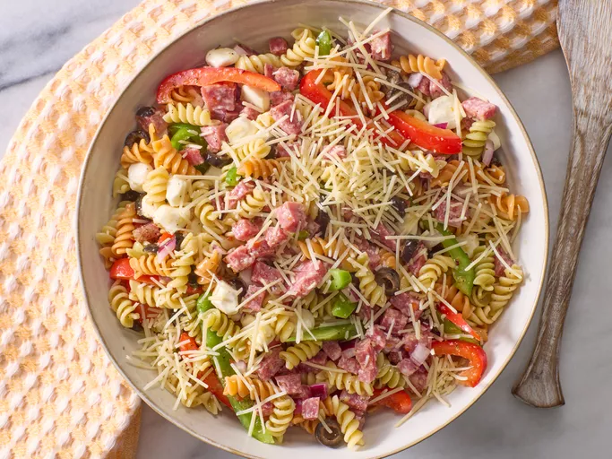

All Recipes
Italian pasta salad

Description
This Italian pasta salad that's loaded with tri-color rotini pasta,
salami, bell peppers, and mozzarella is quick to make and full of
flavor for a delicious summer meal
Ingredients
- 1 (12 ounce) package tri-color rotini pasta
- ¾ pound Italian salami, finely diced
- ½ green bell pepper, sliced
- ½ red bell pepper, sliced
- ½ red onion, chopped
- 1 (6 ounce) can sliced black olives
- 8 ounces small fresh mozzarella balls (ciliegine)
- 1 cup Italian-style salad dressing
- 3 (.7 ounce) packages dry Italian-style salad dressing mix, or to taste
- ½ cup shredded Parmesan cheese
Directions
- Step 1: Gather all ingredients.
- Step 2: Bring a large pot of lightly salted water to a boil.
Cook rotini pasta at a boil until tender yet firm to the bite, about 8 minutes.
Drain and rinse with cold water until cool.
- Step 3: Combine pasta, salami, bell peppers, onion, mozzarella
balls, and olives in a large bowl. Add salad dressing and toss to coat.
- Step 4: Season pasta salad with dry salad dressing mix and stir to combine.
- Step 5: Sprinkle with Parmesan cheese before serving. Enjoy!